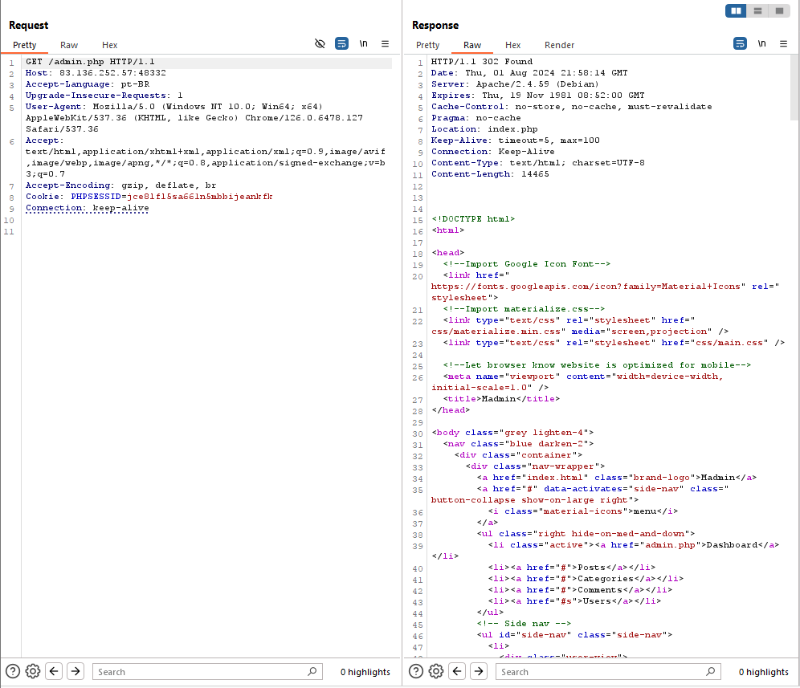

Introdução
Autenticação é definido como “o processo de verificar de uma entidade de um sistema ou recurso de um sistema possuí certo valor de atributo” no RFC 4949. Na segurança da informação, autenticação é o processo de confirmar a identidade de uma entidade, garantindo que a pessoa realmente é quem ela diz ser. Do outro lado, autorização é “garantir a uma pessoa acesso a um recurso de um sistema”; nesse artigo, não vamos abordar profundamente sobre autorização, mas é importante entender a diferença entre autenticação e autorização.
Métodos de autenticação comuns
Sistemas podem implementar diferenças métodos de autenticação. Tipicamente, podemos ser divididos em três categorias:
- Autenticação por base em conhecimento
- Autenticação por base em propriedade
- Autenticação por base em inerência
Conhecimento
Autenticação baseada em fatores de conhecimento são algo que usuários podem utilizar para provar sua identidade. O usuário provê informações (como senha, PINs ou questões de segurança).
Propriedade
Autenticação pro propriedade é sobre algo que o usuário possui. Isso ode ser feito quando o usuário prova que tem posse de um objeto físico, como um dispositivo, cartão de identidade, token de segurança…
Inerência
Por último, autenticação baseado em inerência se baseia em algo que o usuário é ou faz. Isso inclui reconhecimento biométrico (como digitais), padrões faciais, reconhecimento de voz ou assinaturas.
Autenticação de 1 Fator vs Autenticação Multi-Fator
Autenticação de um único fator muitas vezes se baseia em apenas um método. Por exemplo, a utilização de senhas se baseia apenas no conhecimento da senha.
Por outro lado, uma autenticação de multi-fator (MFA) envolve diversos métodos de autenticação. Por exemplo, se uma aplicação web requer uma senha e um senha temporária de uso único (TOTP), a autenticação se baseia no conhecimento da senha e na posse dispositivo de TOTP.
Ataques de Autenticação
Atacando com em Autenticação de Conhecimento
Esse método de autenticação é o mais fácil de atacar comparado com os outros. Portanto, vamos focar pincipalmente nesse cenário. Isso se da pois o conhecimento estático pode ser adquirido, adivinhado, ou descoberto com ataques de força bruta. Enquanto as ameaças cibernéticas se evoluem, atacantes podem se adaptar a explorar pontos fracos nessa arquitetura de diversas maneiras, incluindo engenharia social e vazamento de dados.
Atacando com em Autenticação de Posse
Uma das vantagem de possuir autenticação baseado em posse é a resistência contra diversas ameaças, como phishing ou tentativas de adivinhar a senha. Métodos de autenticação baseados em posse física, como posse de hardware e cartões inteligentes, são indiscutivelmente mais seguros. Isso é porque objetos físicos são mais difíceis de se adquirir ou copilar comparado com informação que pode ser adivinha, encontrada ou roubada. Contudo, existem desafios de logística (como distribuição do hardware e manutenção da infraestrutura) para implementar esse método.
Além disso, sistemas que usam esse método de autenticação são passíveis de ataques físicos, como roubo ou clonagem de objetos, bem como ataques na criptografia que o sistema utiliza. Por exemplo, clonar objetos (como NFC) em ambientes públicos, como transportes ou cafeterias, é um vetor de ataque viável.
Atacando com em Autenticação de Inerência
Autenticação baseada em inerência prove métodos que são amigáveis aos usuários. Usuários que não querem lembrar de senhas complexas ou carregar tokens físicos; eles simplesmente provem suas informações biométricas, como sua digital e reconhecimento facial, para ganhar acesso. Esse processo de autenticação melhora e experiência do usuário e diminui a chance de brechas de segurança resultantes de senhas fracas ou tokens físicos roubados.
Entretanto, esse método de autenticação pode ser irreversível em algum caso de vazamento de informações. Isso é porque usuários não podem mudar suas características biométricas, como suas digitais. Por exemplo, em 2019, atacantes vazaram o conteúdo do banco de dados de um sistema de bloqueio, que era utilizado por celular ou aplicação web, para autenticar usuários usando suas digitais ou face. Esse vazamento expos todas as digitais e padrões de face, com adição ao usuário e sua senha. Se a autenticação fosse baseada somente em senha, os usuários poderiam mudar facilmente sua senha, entretanto, nesse método de autenticação, não foi possível atingir um objetivo similar.
Teoria de enumeração de usuários
Proteções contra enumeração do usuário podem ter um impacto na experiência do usuário. Uma aplicação web que revela que o usuário digitou seu login errado pode auxiliar usuários legítimos a identificar que eles escreveram seu nome incorretamente. Ainda assim, o mesmo se aplica a atacantes tentando adivinhar nomes de usuários válidos. Até mesmo aplicações bem conceituadas (como o WordPress) permite esse tipo de enumeração.
Para obter uma lista de usuários válidos, um atacante pode utilizar uma Wordlist de usuários. Usernames são frequentemente mais simples e menos complicados que senhas. Eles raramente contém caracteres especiais quando não são um endereço de email. Uma lista de usuários comuns podem permitir um atacante em focar o ataque em um único escopo através de um ataque de força bruta. Essa enumeração pode ser feita através do Ffuf, ao utilizar o dicionário SecLists/Useranmes/xato-net-10-million-usernames.txt.
Ataque de força bruta
Depois de conseguir um usuário, podemos tentar realizar um ataque de força bruta tentando diversas senhas. Caso um sistema demonstre que tenha algum requisito de senha, podemos criar um segundo Dicionário contendo somente as senhas que cumpram com os requisitos descritos pelo sistema. Por exemplo, um sistema que tenha os seguintes requisitos:
- Conter pelo menos 1 letra maiúscula
- Conter pelo menos 1 letra minúscula
- Conter pelo menos 1 digito
- Conter pelo menos 10 caracteres
Pode-se filtrar o dicionário de senha rockyou.txt para esses requisitos, com o seguinte comando:
grep '[[:upper:]]' /opt/useful/SecLists/Passwords/Leaked-Databases/rockyou.txt | grep '[[:lower:]]' | grep '[[:digit:]]' | grep -E '.{10}' > custom_wordlist.txtIsso irá diminuir a quantidade de senhas em até 99%!
Ataque em sistema de recuperação de senha
Sistemas de recuperação de senhas muitas vezes se baseiam em um token de autenticação de um único uso. Esse token pode ser gerado de diversas maneiras. Contudo, se essa geração for fraca, esse token pode ser adivinhado através de um ataque de força bruta.
Por exemplo, para gerar um arquivo com números de 0 a 9999, podemos usar o seguinte comando:
seq -w 0 9999 > tokens.txtAtacando sistema de autenticação de 2 fatores
Para atacar um sistema de autenticação de 2 fatores, é importante temos em mente que:
- Devemos declarar o cookie na hora do ataque de força bruta, para que o sistema reconheça nosso cookie depois que ele seja autenticado
Isso é de suma importância quando queremos autenticar nossa sessão.
Podemos seguir o mesmo passo a passo do ataque de recuperação de senha, e gerar um dicionário com números e tentar todas as requisições, sempre lembrando de definir nosso Cookie de sessão.
ffuf -w ./tokens.txt -u http://bf_2fa.htb/2fa.php -X POST -H "Content-Type: application/x-www-form-urlencoded" -b "PHPSESSID=fpfcm5b8dh1ibfa7idg0he7l93" -d "otp=FUZZ" -fr "Invalid 2FA Code"Atacando método de recuperação de senha
Pergunta de segurança facilmente adivinhável
Perguntas como Onde sua mãe nasceu? ou Qual é o nome do seu cachorro?, são perguntas simples que podem ser facilmente adivinhadas com algum ataque de força bruta. Por exemplo, para a questão das cidades, é possível usar esse CSV, que contém o nome de mais de 25.000 cidades, para tentar adivinhar o nome da cidade onde a mãe da vitima nasceu.
cat world-cities.csv | cut -d ',' -f1 > city_wordlist.txtManipulando a solicitação de modificação de senha
Em alguma instância, pode existir uma falha de lógica que pode nos permitir modificar a senha de outro usuário. Por exemplo, podemos criar uma conta com as nossas informações, seguir o fluxo de recuperação de senha e, por fim, modificar o parâmetro do usuário que está requisitando a alteração de senha. Segue o exemplo de requisições:
POST /reset.php HTTP/1.1
Host: pwreset.htb
Content-Length: 18
Content-Type: application/x-www-form-urlencoded
Cookie: PHPSESSID=39b54j201u3rhu4tab1pvdb4pv
username=htb-stdntPOST /security_question.php HTTP/1.1
Host: pwreset.htb
Content-Length: 43
Content-Type: application/x-www-form-urlencoded
Cookie: PHPSESSID=39b54j201u3rhu4tab1pvdb4pv
security_response=London&username=htb-stdntPOST /reset_password.php HTTP/1.1
Host: pwreset.htb
Content-Length: 36
Content-Type: application/x-www-form-urlencoded
Cookie: PHPSESSID=39b54j201u3rhu4tab1pvdb4pv
password=P@$$w0rd&username=htb-stdnt <--- Podemos alterar para adminBypass na autenticação através de acesso direto
Esse cenário é mais difícil de se observar normalmente. Entretanto, ele ainda pode ser possível. Vamos supor o seguinte código:
if(!$_SESSION['active']) {
header("Location: index.php");
}Nesse cenário, por mais que o usuário não tenha uma sessão ativa, todo o conteúdo da página é carregado logo após a requisição. Portanto, é possível obter o conteúdo da página, mesmo que ele é redirecionado logo após.

Modificação de parâmetros
As vezes, a questão pode ser passada através de algum parâmetro, como por exemplo:
GET /admin.php?user_id=123 HTTP/1.1Com isso, basta apenas mudar o parâmetro (recomenda-se utilizar técnicas de força bruta) para conseguir acessar a página de administrador.
Atacando sessões
As sessões são como os serviços web conseguem armazenar as informações a respeito de seus clientes. Entretanto, a maneira com que os tokens de sessões são gerados podem levar a ataques que permitem personificar outros usuários ou forjar tokens de sessões.
Por exemplo, imagine o seguinte cenário onde os cookies são gerados da seguinte maneira:
2c0c58b27c71a2ec5bf2b4b6e892b9f9
2c0c58b27c71a2ec5bf2b4546092b9f9
2c0c58b27c71a2ec5bf2b497f592b9f9
2c0c58b27c71a2ec5bf2b48bcf92b9f9
2c0c58b27c71a2ec5bf2b4735e92b9f9
Pode-se perceber que grande parte dos cookies começa e termina da mesma maneira, e apenas uma parte do token está sendo alterado. Isso quer dizer que existe um padrão durante a geração de tokens de sessão, e esse padrão pode ser descoberto, estudado e explorado.
Outro método de atingir o mesmo resultado é quando o cookie é serializado de uma maneira fácil de decodificar, como Base64 ou hexadecimal. Dessa maneira, podemos decodificá-lo e alterar seu valor.